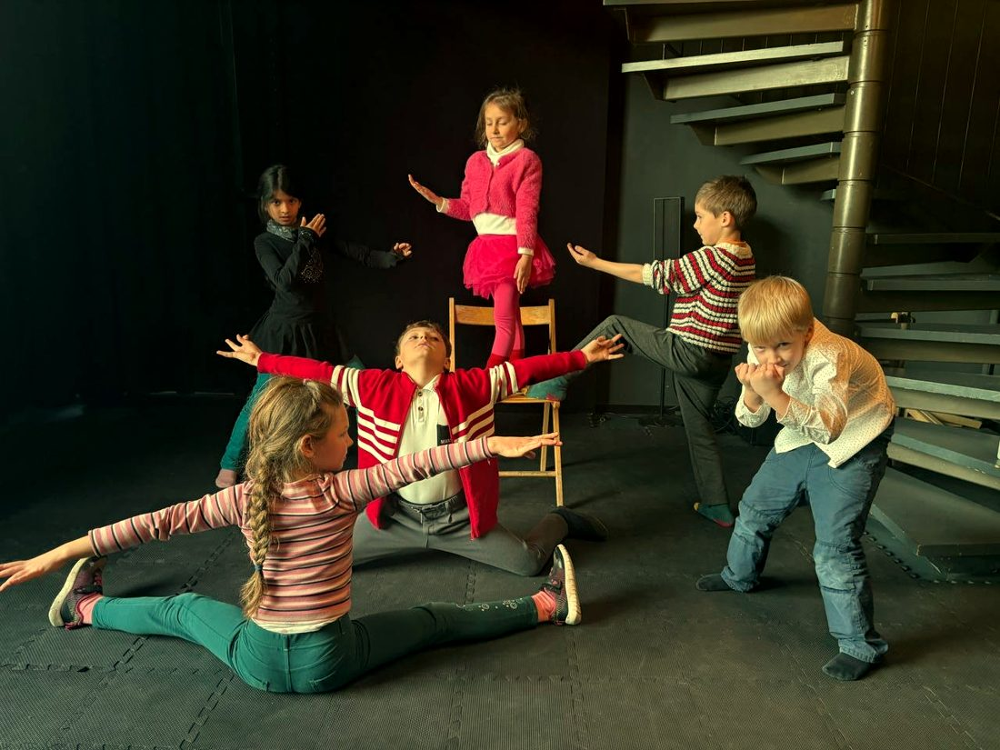
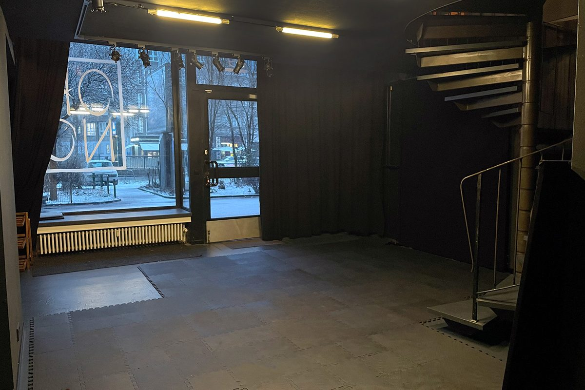
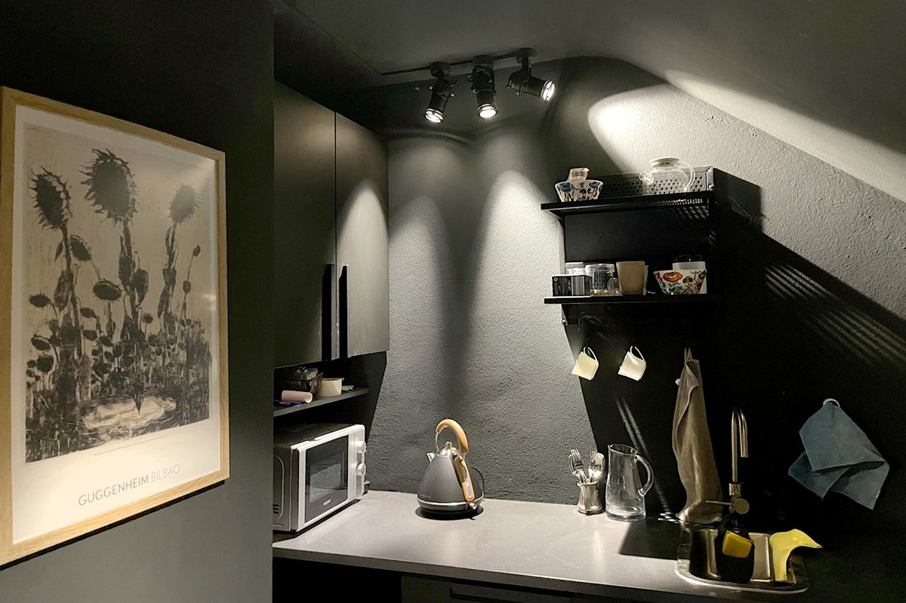

Kulturzentrum OKNO
Brunnenstraße 69 · Berlin-Mitte · U8 Voltastraße
Площадка для лекций, концертов, кино и встреч в Берлин-Митте: двухэтажное пространство и зал до 40 зрителей. А ещё курсы для детей и взрослых.
Как у нас
Листайте вбок



Афиша
22.11ВС · 12:00 Теневые куклы для рождественского вертепа
Small Stories Theater Марии Ясиновер проводит семейную мастерскую по созданию теневых кукол для рождественского вертепа.
Вместе с детьми и родителями мы познакомимся с персонажами старинного вертепа, поговорим о рождественской истории и своими руками создадим её героев. И главное: наши куклы не останутся просто красивыми предметами. Они станут актёрами настоящего вертепного спектакля, который мы сыграем на площадках Берлина.
Художница
Кукол создала соавтор мастерской Элла Адамова: кукольница, скульпторка и керамистка, ученица легендарного Сергея Образцова.
Запись и вопросы: Instagram · Telegram · okno@bgff.de
26.11ЧТ · 18:30 Современная жизнь цвета
Вторая лекция цикла «Цвет: от истории к ощущению». В зале OKNO и онлайн.
Почему один и тот же цвет может вызывать совершенно противоположные чувства? Почему красный бывает не только страстным, но и сдержанным, зелёный не всегда успокаивает, а белый далеко не всегда нейтральный?
Мы привыкли считать цвет вопросом вкуса. Но насколько наши предпочтения действительно принадлежат нам? Почему одни цвета становятся символами эпохи, другие выходят из моды, а потом возвращаются?
На лекции поговорим о том, как цвет живёт и работает сегодня: о его эмоциональном воздействии, отношениях со светом, пространством и фактурой, о том, как он проявляет себя в интерьере, одежде и окружающем нас мире. И попробуем понять, почему цвет – это не только то, что мы видим, но и то, что мы чувствуем.
Об авторе
Ольга Линден – стилист и декоратор интерьера. С 2014 года работает с частными клиентами, компаниями, артистами, проектами в кино и моде как стилист, художник по костюмам и декоратор. С 2021 года живёт и практикует в Берлине. В основе её работы – внимательное исследование запроса: не только того, как всё должно выглядеть, но и того, какое состояние это должно создавать.
04.12ПТ · 18:30 Пути авангарда
Авангард развивался одновременно в Европе и в России: неровно, по-разному, и всё же с общей чертой. Это была свежая передовая линия, новый подход к искусству, новые медиа и попытка поставить под сомнение академическое образование и «руку художника». Художники путешествовали, знакомились, подсматривали друг у друга и перенимали чужой опыт. Для авангардиста не было ничего запретного: любое действие могло стать актом искусства.
На лекции искусствовед и преподаватель Надежда Воронина проследит маршруты авангарда от Кандинского до «Бубнового валета» и «Ослиного хвоста», от групп русских художников за рубежом до борьбы Шагала с Малевичем.
Об авторе
Надежда Воронина – искусствовед, в прошлом доцент Российской академии художеств. Работала в науке в Петербурге и Мюнхене. В диссертационном исследовании сосредоточилась на рубеже веков, институциях искусства и группе русских художников в Мюнхене.
06.12ВС · 17:30 Киноклуб OKNO × Easy Pieces: роуд-муви
Вечер о фильмах-путешествиях: от вестернов Джона Форда до Денниса Хоппера, Джима Джармуша, Вима Вендерса и братьев Коэн. Сначала лекция, потом обсуждение и напитки.
Сбор гостей с 17:00, начало в 17:30. Киноклуб ведёт Easy Pieces.
08.12ВТ · 17:00 Мастер-класс «Зимняя сказка: новогодний вечер»
О мастер-классе
Создадим уютный зимний пейзаж на небольшом холсте акриловыми красками: заснеженные деревья, маленькие домики, мягкий свет фонарей и атмосферу сказочного зимнего вечера.
Шаг за шагом каждый напишет собственную картину. Она украсит дом к Рождеству и Новому году или станет подарком близким и друзьям.
Для кого
Ждём всех от 3 лет: можно прийти с ребёнком, вместе всей семьёй или без детей. Художественный опыт не нужен, все материалы предоставим.
Ведущая
Валерия, художница и преподавательница рисования с академическим образованием. Уже четыре года проводит самые разные арт-мастер-классы.
15.12ВТ · 17:00 Мастер-класс «Магия Рождества: нарисуй свою ёлку»
О мастер-классе
Погрузимся в праздничную атмосферу и нарисуем собственную новогоднюю ёлку на небольшом холсте акриловыми красками: пушистые ветви, разноцветные игрушки, гирлянды и сияющие звёзды.
Каждый придумает свой дизайн и заберёт яркую праздничную картину домой или подарит её родным и друзьям.
Для кого
Ждём всех от 3 лет: можно прийти с ребёнком, вместе всей семьёй или без детей. Художественный опыт не нужен, все материалы предоставим.
Ведущая
Валерия, художница и преподавательница рисования с академическим образованием. Уже четыре года проводит самые разные арт-мастер-классы.
19.12СБ Киноклуб OKNO × Easy Pieces: рождественская киноигра
Играем командами по рождественским фильмам, команды собираются случайно. Подойдёт и тем, кто играет впервые. Будут призы!
Время начала уточним. Следите за новостями киноклуба в Instagram.
Билеты можно купить по ссылке в карточке события. Новые события и даты мы публикуем здесь, на сайте, и в наших соцсетях: Instagram и Telegram.
Курсы
Пробное занятие в любую группу – 30 €. Нажмите на курс, чтобы прочитать подробности. О каждом преподавателе подробнее рассказываем в нашем Instagram.
Детские курсы
Открыта запись Small Stories Theater Kids Абонемент 100 € в месяц
Здесь рождаются маленькие истории. Дети мастерят кукол, примеряют маски, оживляют тени на стене и придумывают сказки, которые потом сами разыгрывают. А по дороге учатся говорить ясно и смело, слышать свой голос, чувствовать тело и петь.
 Ведёт Мария Ясиновер, режиссёр, актриса и педагог.
Ведёт Мария Ясиновер, режиссёр, актриса и педагог.
Открыта запись Музыкальная мастерская Абонемент 100 € в месяц, 80 € для учеников русской субботней школы BGFF e.V.
Здесь музыка начинается с игры. С первого занятия дети берут в руки настоящие инструменты: маленькие кахоны, бубны, маракасы, колокольчики и ксилофоны. Учатся чувствовать ритм и настроение музыки, слушать друг друга, петь и импровизировать.
Ведёт Ника, музыкант, вокалистка и автор песен, сертифицированный музыкальный педагог (EMP). Выступает с детства и знает, что музыка – это прежде всего свобода и радость.
Для взрослых
Открыта запись Small Stories Theater Lab Абонемент 120 € в месяц
Студия для тех, кто хочет выдохнуть и побыть в творческом процессе без ожиданий, без оценок и без необходимости что-то уметь заранее. Здесь можно играть, пробовать новое, слушать себя и быть разными. Мы рады людям любого возраста.
Через методы театра и арт-терапии мы учимся подбирать ключик к своему играющему ребёнку и своей креативности.
Ведёт Мария Ясиновер, режиссёр, актриса и педагог.
Стоимость и скидки
| Small Stories Theater Kids | 100 € в месяц |
|---|---|
| Музыкальная мастерская | 100 € в месяц |
| Small Stories Theater Lab | 120 € в месяц |
| Любое пробное занятие | 30 € |
Семейная скидка
Родитель и ребёнок – скидка 20%.
Второй ребёнок в семье – скидка 20%.
Третий ребёнок в семье – скидка 30%.
Второй курс для одного человека
Любой второй абонемент в тот же месяц – скидка 20 €.
Правила посещения курсов
Посещение занятий
Присмотр за ребёнком
- действует только во время самого занятия, с начала и до официального окончания;
- приводите ребёнка точно к началу и забирайте сразу после окончания: до и после занятия присмотр студией не обеспечивается;
- в случае ЧП звоните преподавателю;
- если ребёнка забирает кто-то другой, сообщите об этом заранее, чтобы преподаватель знал, кому передаёт ребёнка.
Пробное занятие
Перед началом занятий можно посетить одно пробное занятие.
Каникулы и праздники
Во время берлинских школьных каникул и государственных праздников занятия продолжаются. На каникулах культурный центр также предлагает детские лагеря, участники курса могут посещать их со скидкой.
Пропуски
Пропуск по своим причинам
Ни возврат оплаты, ни перенос занятия не предусмотрены (см. пояснение об оплате ниже).
Пропуск по болезни
Вы можете один раз в месяц перенести пропущенное занятие. Доступны три варианта:
- отработать занятие в другой день в группе вашего преподавателя, если есть свободное место;
- отработать занятие в другой день в любой другой студии центра, где есть свободные места;
- перенести стоимость занятия на следующий месяц: при оплате следующего абонемента вы оплачиваете на одно занятие меньше.
Оплата и отказ от занятий
Оплата вносится до 10-го числа каждого месяца
Это оплата за ваше место в группе, а не за конкретно посещённые занятия. Сумма не меняется ни если вы пропускаете отдельные занятия, ни в месяцы с каникулами.
Отказ от занятий
- оформляется письменно (по email, в WhatsApp, в Telegram или от руки) до 10-го числа месяца;
- занятия прекращаются с конца этого месяца, оплата за текущий месяц при этом всё равно вносится;
- если письменный отказ не подан, участие и оплата продолжаются автоматически.
Пространство OKNO для ваших идей
OKNO — это уютная площадка, которую вы можете использовать для своих лекций, мастер-классов, концертов, встреч и показов. Мы с радостью дадим вам место и время и, если нужно, поможем с организацией.
Что вас ждёт
Двухэтажное пространство, в зале до 40 зрителей. Есть проектор, экран и аудиосистема.




Выберите свой формат (от 2 часов)
Просто зал
Для тех, кто всё сделает сам. Мы даём пространство, а вы наполняете его своим событием. Без техники и без рекламы с нашей стороны.
Зал с техникой
Всё то же, плюс проектор, экран и звук. Идеально для лекций, показов и презентаций, которые вы продвигаете сами.
Всё включено
Зал, техника и наша поддержка: расскажем о вас в Instagram, Telegram и на сайте, добавим в наши дайджесты, поделимся с партнёрами, возьмём на себя продажу билетов.
Можно добавить
- Администратор, который встретит гостей и будет рядом всё мероприятие: 50 € за любое время.
- Таргетированная реклама: обсудим бюджет вместе.
Как забронировать
Напишите нам, и мы подберём для вас дату: Instagram @okno_kultur · Telegram @okno_kultur_admin · okno@bgff.de
Правила брони и отмены
- Чтобы закрепить дату, вносится предоплата 50% стоимости.
- Оставшиеся 50% вносятся за неделю до мероприятия.
- Отменить бронь бесплатно можно не позднее чем за две недели до даты. Позже предоплата не возвращается.
- После полной оплаты бесплатная отмена невозможна.
- Время аренды считается с момента, когда вы забираете ключ, до момента, когда возвращаете его в сейф.
Как нас найти
Запись и вопросы
Instagram @okno_kultur
Telegram @okno_kultur_admin
okno@bgff.de
Пишите в личные сообщения или на почту.